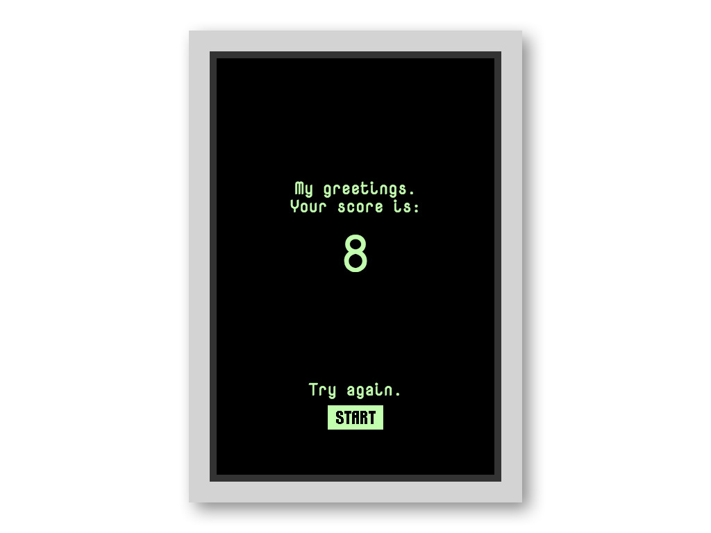
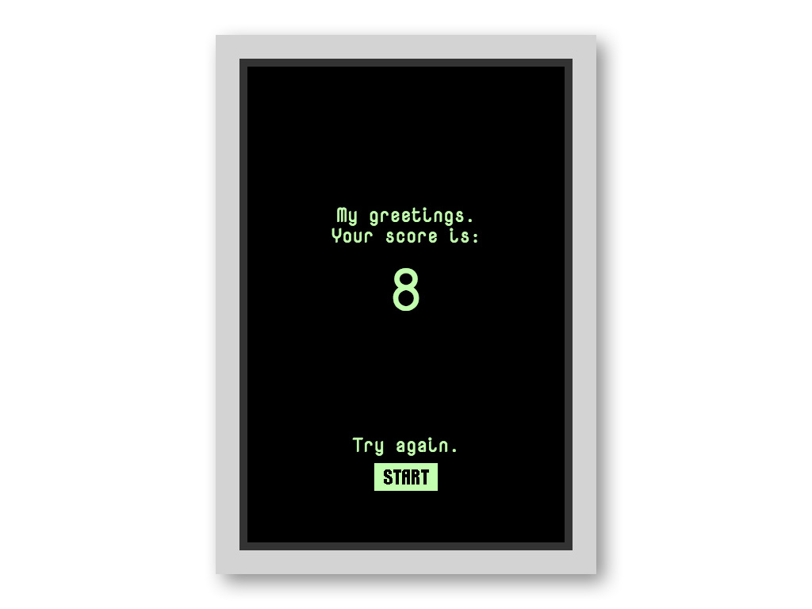
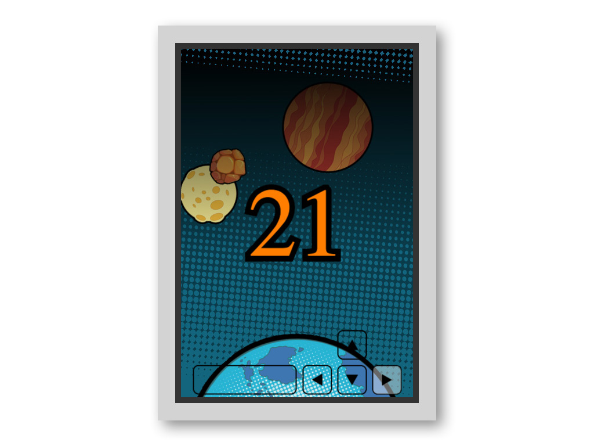
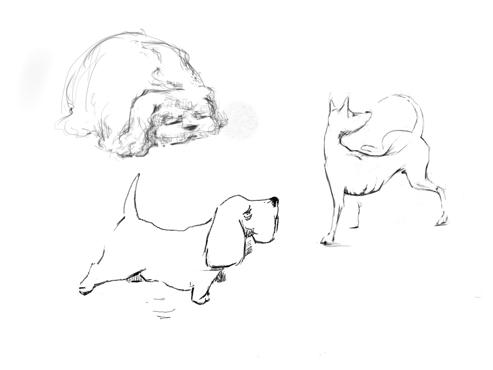
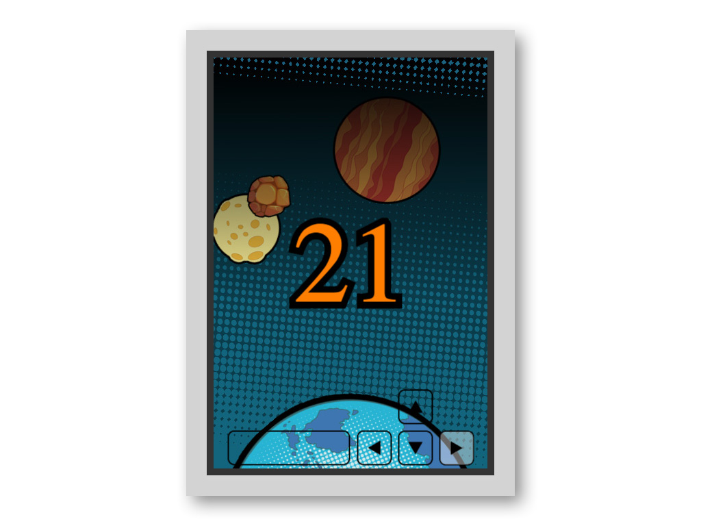
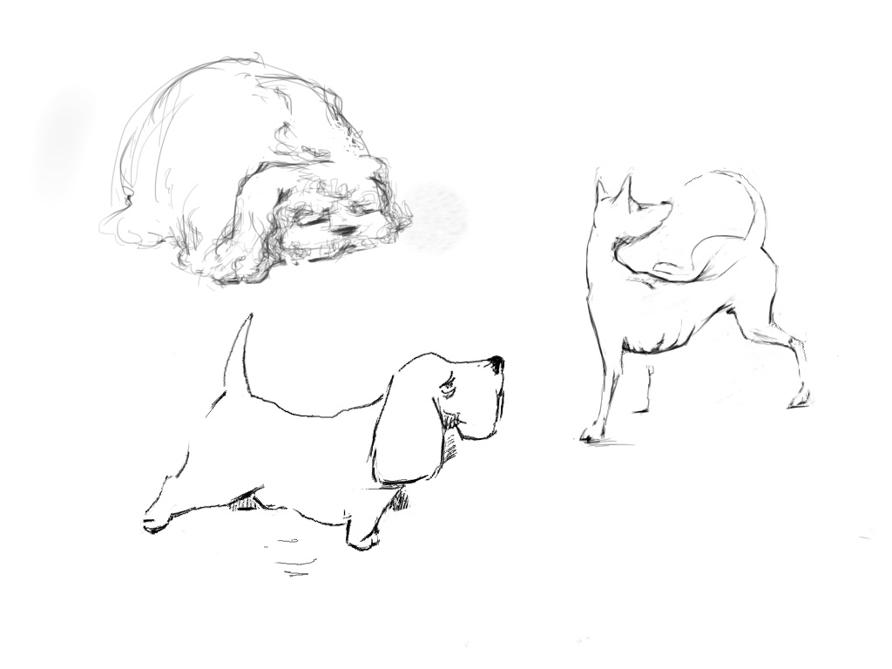

Игры
https://pblazh.github.io/cracow-tetrishttps://pblazh.github.io/pixi-chromium

 

 
Задача
Я получил тествое задание написать свою реализацию игры Тетрис. Я должен был успеть за два дня и испопьзовать или creative.js или pixi.js
Реализация
Для написания тестового задания з выбрал create.js так, как я использовал эту библиотеку раньше а писать нужно было быстро. Позднее, когда мне сказали, что тест я сдал, я решил портировать игру на Pixi.js. Это получилось довольно быстро, что говорит, по моему о том, что архитектурно я написал игру хорошо. Потом я решил попробовать еще чуть-чуть pixi.js и сделал еще одну маленькую игрушку с ракетой. Графику я одолжил на shutterstock.com, но потом сильно поменял, так, как она меня не устраивала.
Потом я хотел, для пробы, написать игру с более сложными спрайтами, с разными анимациями, скоростями, и т. д. Я не нашел нужной мне графики и начал рисовать сам. К сожалению это привело к тому, что я увлекся и провел целый день за рисованием собачек.
Исходники игр с более подробными комментариями и рабочими примерами можно посмотреть на моем аккаунте на github.
https://github.com/pblazh/cracow-tetris https://github.com/pblazh/pixi-chromium
Игры сделаны с использованием технологии HTML5 (Create.js/Pixi.js).